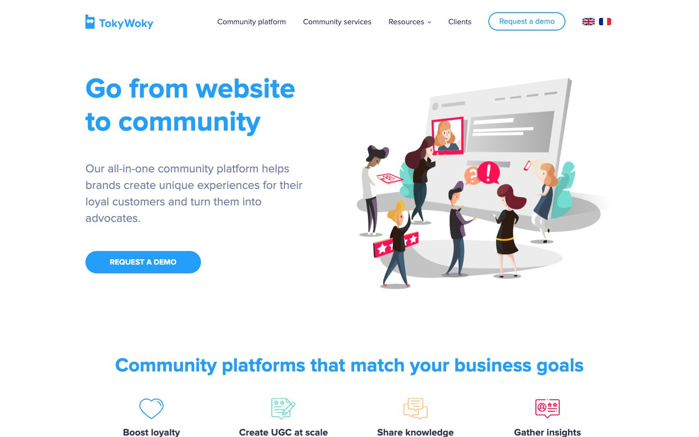

References / Website / 359
TokyWoky website, 2020
The 2020 home page of a French community-platform startup: small flat figures with long legs gather on a grey platform in front of an oversized browser window.
- Source
- TokyWoky (archived copy)
- Creator
- TokyWoky
- Made
- 2020 (Wayback capture of 7 September 2020)
- Style
- Corporate Memphis (agent-proposed, not yet reviewed by a person)
- Moods
- Busy, friendly, corporate
- Evidence
- Captured with
tools/capture.mjs(headless Chrome, 1440 × 900) on 28 September 2026 and inspected. No cookie box covers the page. Wayback redirected to a copy without theif_flag, but no archive toolbar appears in the screenshot. The screenshot shows the first viewport; the measurement covers up to four screens. - Reviewed
- Rights
- Third-party work, stored with credit for commentary. License: unverified. Rights policy
Context
The live address now redirects to a Skeepers brand-community page, which returned “Error 403 Forbidden” to tools/capture.mjs on 28 September 2026.
Observed
- The heading “Go from website to community” is set in a heavy bright blue sans-serif, with grey body text and a pill-shaped blue button “REQUEST A DEMO”.
- On the right, a large tilted browser window in light grey shows a red-framed portrait and grey text bars.
- Seven small figures stand around it on a grey oval platform: they hold star-rating cards, speech bubbles with “?” and “!”, and a phone.
- The figures have small heads, long thin legs, and dark clothes; skin tones are natural. Teal plant shapes stand behind them.
- The window and the platform have soft grey gradients and cast shadows.
Why it belongs
The scene is the style’s most common product layout: many small people acting on one giant screen. The gradients and shadows mix it with the soft 3D of later SaaS illustration.
Borrow
Show a platform with many small figures each doing one different action around the product screen, to suggest a community.
Measured
Machine-extracted by tools/extract-traits.js on . Full measurement.
- Type families
- Proxima Nova (100%)
- Type scale ratio
- 1.16
- Median radius
- 12 px
- Mean chroma
- 0.05
- Palette
- #ffffff 83%
- #33334f 10%
- #239efb 4%
- #767ead 3%

